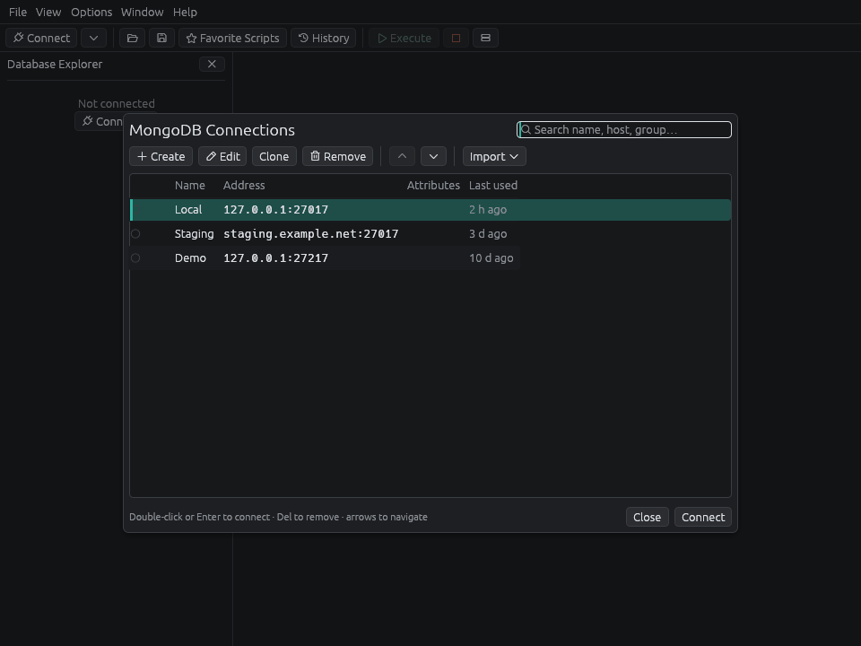
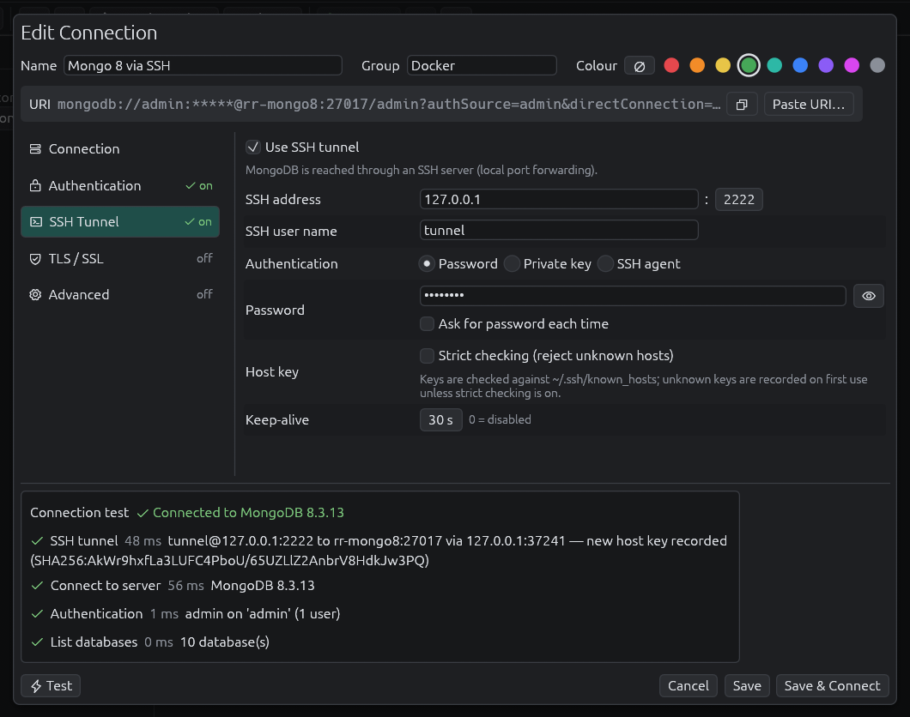
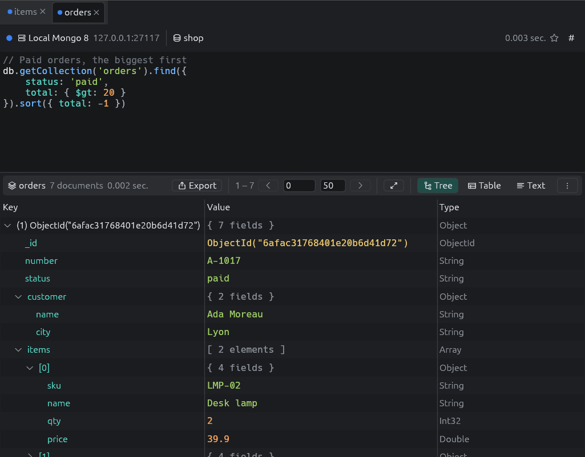

The Robo 3T workflow,
rebuilt in Rust.
A fast, native MongoDB client in the spirit of Robo 3T and Robomongo, with an embedded shell, working SSH tunnels and support for every MongoDB from 3.6 to 8.x. One binary. No Electron.

Why Rustyrobo?
Robomongo / Robo 3T was the lightweight, shell-centric MongoDB client many of us loved. It is no longer maintained, its shell stopped at MongoDB 4.2 and SSH tunnels became unreliable.
Same interface
Explorer, query tabs, tree/table/text views, menus and shortcuts as you remember them.
Native and light
A single Rust binary with immediate-mode rendering: starts instantly, uses little memory.
Today's MongoDB
Modern driver for 4.4–8.x, automatic legacy driver for 3.6–4.2, SRV, TLS, X.509.
Everything you used in Robo 3T, and more
Feature parity with Robo 3T first, then the things it always lacked.
A connection editor that tells you what's wrong
The connection dialog was redesigned from scratch.
- Sections with live status badges and inline validation
- Two-way connection string: paste a URI or copy the generated one
- Step-by-step test: SSH tunnel → server → authentication → databases
- Colour tags and groups to tell production from staging at a glance
- Searchable connection manager with keyboard navigation

Real themes
Each theme styles the whole interface, the JavaScript editor and the colours of BSON types. Pick one to see it.

Download
Prebuilt binaries for Linux, macOS and Windows are on the latest release.
Or build from source with Rust 1.88 or newer:
$ git clone https://github.com/Tatayoyoh/rustyrobo.git $ cd rustyrobo $ cargo build --release $ ./target/release/rustyrobo
Your existing Robo 3T connections can be imported from the connection manager (Import → From Robo 3T).
Questions
Is Rustyrobo an alternative to Robo 3T and Robomongo?
Yes. Robo 3T (often typed Robot 3T or Robo3T), formerly Robomongo, is no longer maintained. Rustyrobo keeps its layout, menus and shortcuts, and its generated scripts like db.getCollection('x').find({}).
Which MongoDB versions does this MongoDB client support?
Every MongoDB from 3.6 to 8.x, the embedded shell included: Robo 3T's shell stopped at MongoDB 4.2.
Can I keep my Robo 3T connections?
Yes: Import → From Robo 3T in the connection manager reads them, SSH tunnels included (passwords Robo 3T encrypted have to be typed again). You can also paste any connection string.
Is it free?
Yes, free and open source under the Apache-2.0 licence, for Linux, macOS and Windows. It is an independent rewrite, not affiliated with Studio 3T or MongoDB, Inc.